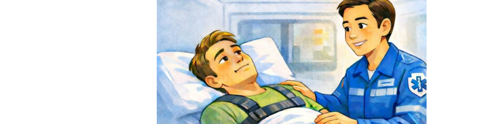
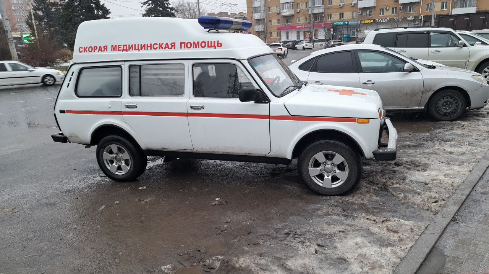

Оформление заявки
Позвоните в нам по телефону или напишите в соцсетях. Мы вам перезвоним.
8(922)233-36-89 или 750-07-65
Уточнение деталей
Специалист согласует время подачи и итоговую стоимость поездки.
Подача транспорта
Бригада прибывает точно к обозначенному времени.
Оплата услуги
Вносится после завершения поездки наличными или переводом.

«Мед-перевозка.рф» – служба, целью которой является транспортировка лежачих больных без медицинского сопровождения по Челябинску и Челябинской области. Главными нашими преимуществами являются: низкая стоимость транспортировки, своевременная подача автомобиля, бережное и аккуратное отношение к больному, индивидуальный подход к каждому клиенту.
Компания «Мед-перевозка.рф» осуществляет перевозку маломобильных граждан на специально оборудованных автомобилях с привлечением двух молодых людей, способных выполнить все необходимые действия с лежачим больным.
Доставка тяжелобольных пациентов требует особого оборудования, которое обеспечит и зафиксирует правильное положение тела, предотвратит пролежни и гарантирует, что во время внештатных ситуаций можно будет оказать первую помощь. Во время нашей работы мы используем следующие приспособления
По запросу мы можем создать условия под специфические требования в особых состояниях или при тяжёлых медицинских заболеваниях: обширные ожоги, переломы, травмы головы или позвоночника, глубокие раны, запущенные неврологические болезни, сердечно‑сосудистые болезни, онкология, послеоперационные состояния и др.
Ограничений по весу нет, по необходимости для тяжёлого пациента могут выехать на вызов 3 или 4 сотрудника
Дополнительных доплат нет
Сообщите адреса и состояние пациента — озвучим точную стоимость.
Обычно можно взять личные вещи, документы и необходимые лекарства.
Мы работаем круглосуточно, без выходных.
Возможность сопровождения зависит от машины и ситуации — уточним при заказе.